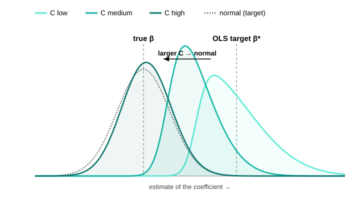

Lecture 10
PIMES/UFPE
Lecture 9 restored consistency under endogeneity — a valid instrument recovers the structural \(\bbeta\) that OLS misses. Now the bill: at what price? Three prices, the honest accounting after any IV estimate:
Under relevance (full-rank \(\bQ_{zx}=\E[\mathbf{z}\mathbf{x}']\)), exogeneity, and finite moments, scale the 2SLS error by \(\sqrt n\) and read off a bread–meat sandwich — a design inverse around a score variance: \[\sqrt n\,(\bb_{\text{2SLS}}-\bbeta)=\underbrace{\Big(\tfrac1n\bX'\bP_{\bZ}\bX\Big)^{-1}}_{\pto\ \mathbf{H}^{-1}}\; \underbrace{\tfrac1{\sqrt n}\bX'\bP_{\bZ}\beps}_{\dto\ \Normal(\mathbf{0},\,\boldsymbol{\Sigma})} \ \dto\ \Normal(\mathbf{0},\,\bV),\qquad \boxed{\ \bV=\mathbf{H}^{-1}\,\boldsymbol{\Sigma}\,\mathbf{H}^{-1}\ }\] \[\underbrace{\mathbf{H}=\bQ_{xz}\bQ_{zz}^{-1}\bQ_{zx}}_{\text{design (bread)}},\qquad \underbrace{\boldsymbol{\Sigma}=\bQ_{xz}\bQ_{zz}^{-1}\,\bOmega\,\bQ_{zz}^{-1}\bQ_{zx}}_{\text{score variance (meat)}},\qquad \bOmega=\E[\mathbf{z}\mathbf{z}'\varepsilon^2].\]
The variance estimator just plugs sample moments into \(\bV=\mathbf{H}^{-1}\boldsymbol{\Sigma}\mathbf{H}^{-1}\); the only trap is which residual feeds the meat.
ivreg / feols(y ~ ... | ...) / ivregress 2sls.When \(\mathbf{x}\) is exogenous — so OLS is also consistent — and errors are homoskedastic, OLS is the efficient (Gauss–Markov) choice and IV strictly loses precision: \[\bV_{\text{IV}}-\bV_{\text{OLS}}\ \succeq\ \mathbf{0}\qquad(\text{positive semidefinite, under homoskedasticity}).\]
Relevance is not binary. \(\boldsymbol{\Pi}\neq\mathbf{0}\) secures consistency in the limit, but whether a sample can use the instrument depends on the first stage’s signal-to-noise. Estimating the first stage \(\mathbf{x}=\boldsymbol{\Pi}'\mathbf{z}+\mathbf{v}\) carries sampling error of order \(1/\sqrt n\), so the signal \(\boldsymbol{\Pi}\) stands against noise \(\sim 1/\sqrt n\): their ratio is \(\sqrt n\,\boldsymbol{\Pi}\) — up to a constant, the first-stage \(t\)-statistic.
We want the real shape of the 2SLS sampling distribution when the instrument is weak — there the textbook “it is normal” simply fails. Any such shape comes from a limit (\(n\to\infty\)); but standard asymptotics hold \(\boldsymbol{\Pi}\) fixed, forcing \(\sqrt n\,\boldsymbol{\Pi}\to\infty\), so in that limit every instrument ends up strong and only the normal ever comes back — quietly assuming the problem away.

A weak first stage drags 2SLS back toward the OLS bias it was meant to remove. How strong the first stage is gets summarised by one number — the concentration parameter \(\mu^2\), a signal-to-noise measure of the first stage. Big \(\mu^2\) = strong instrument; in practice you read it off the first-stage \(F\).
The first-stage \(F\) (joint significance of the excluded instruments) estimates \(\mu^2\) via \(\E[F]\approx1+\mu^2/\ell\), so \(\mu^2\approx\ell(F-1)\). Why the famous threshold 10? The 2SLS relative bias is \(\approx\ell/(\mu^2+\ell)=1/\E[F]\approx 1/F\) — so \(F=10\) caps it at about 10%:
| first-stage \(F\) | \(\mu^2\ (\ell=1)\) | 2SLS bias \(\approx 1/F\) |
|---|---|---|
| 2 | 1 | 50% |
| 5 | 4 | 20% |
| 10 | 9 | 10% |
| 20 | 19 | 5% |
The fix is inference that is valid whatever the instrument strength. The workhorse is the Anderson–Rubin (AR) test of a candidate value \(\bbeta_0\): if \(\bbeta_0\) is the truth, the imposed residual \(y-\mathbf{x}'\bbeta_0\) is just the exogenous error, so the instruments should have no power to predict it — regress it on them and test exactly that.
Angrist–Krueger (1991) instrumented schooling with quarter of birth interacted with year and state — hundreds of individually weak instruments. Bound, Jaeger & Baker showed the 2SLS estimates were biased toward OLS, and — the famous demonstration — that replacing quarter of birth with randomly generated instruments produced similar, deceptively “precise” 2SLS estimates. A large sample (\(n\approx 300{,}000\)) gave no protection. This paper launched the weak-instrument literature (Bound et al. 1995).
The weak-instrument diagnosis is the mirror image of Lecture 9’s rank condition: there, \(\rank(\E[\mathbf{z}\mathbf{x}'])=k\) was identification in the population; here, a first stage that is full-rank but tiny is the practical failure. Strong identification is a quantitative version of the rank condition.
If \(\mathbf{x}\) were exogenous, OLS and IV would both be consistent and OLS would be efficient (Part I). A large gap between them is therefore evidence of endogeneity.
When \(\ell>k\) there are more moment conditions than parameters, so the instruments can be checked against each other: if all are valid, the 2SLS residuals should be (nearly) orthogonal to every instrument.